Building WPF application by F sharp (F#) only …
It is just first step for building WPF application from “Console Application” …
WPF Only F# - Application – How To … template does not exist – we need to do it manually …
Create New F# - Console Application …
Change Properties for project WPFOnlyFsharp from “Console Application” to “Window Application”
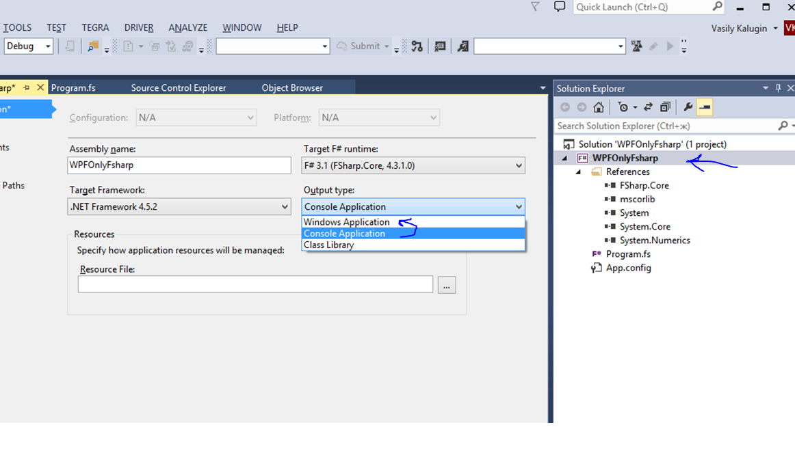
Add new references:
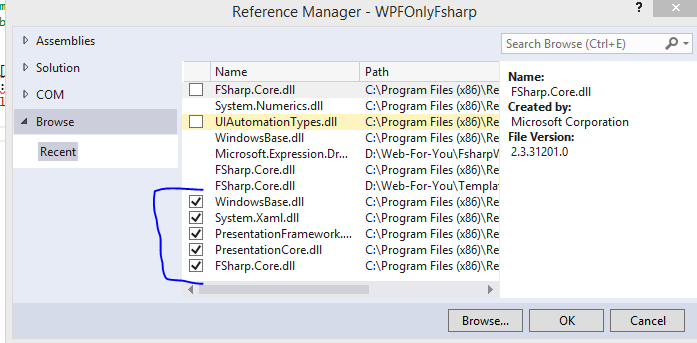
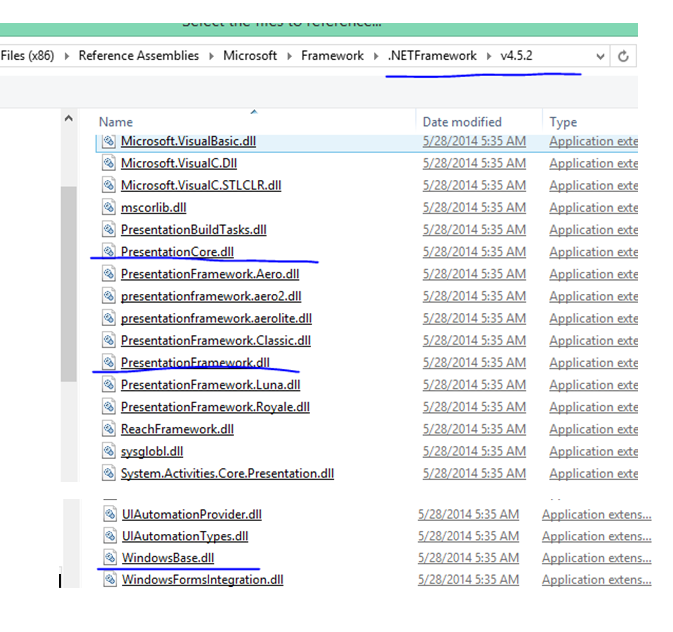
And will not forget add also System.Xaml.dll
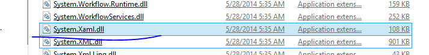
Rename “Program.fs” to “MainWindow.fs” - it will be using inside code ...
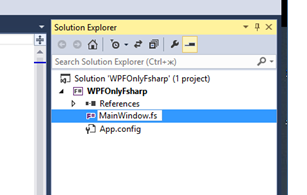
Add new item – use “Source File” – add it …
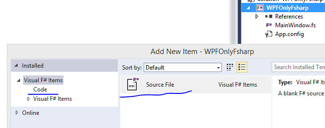
Rename it to “MainWindow.fs.xaml”
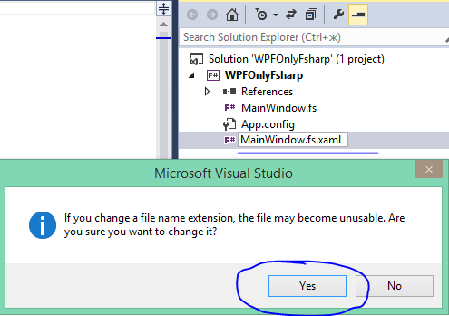
Now change properties for this file …
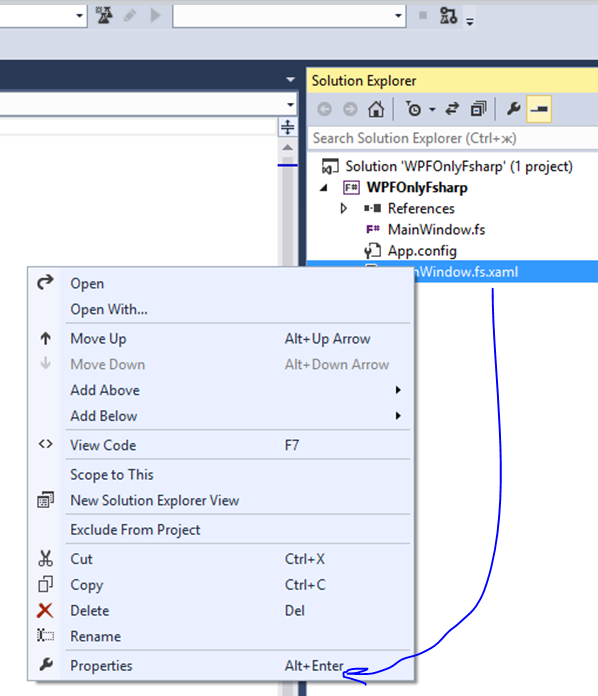
Go to Properties and change “Build Action” to “Resource” and “copy always”
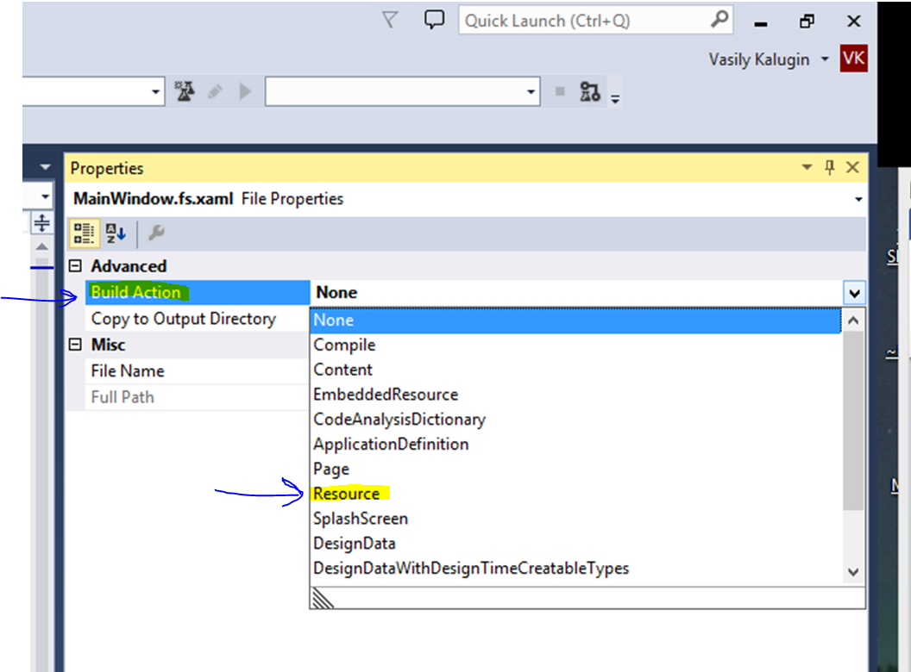
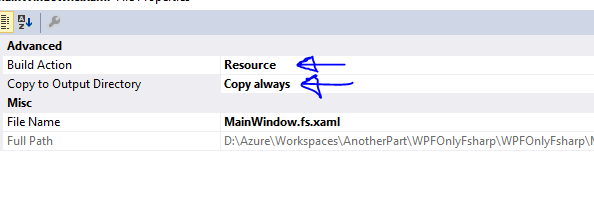
Now You can see in XAML design view – “Invalid Markup”, so you need to enter valid code …
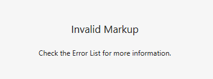
Insert this code …
<Window
xmlns="http://schemas.microsoft.com/winfx/2006/xaml/presentation"
xmlns:x="http://schemas.microsoft.com/winfx/2006/xaml"
Title="MainWindow" Height="350" Width="525">
<Grid>
</Grid>
</Window>
Now mostly done and you will be able to Use standard “XAML” editor … for edit your project …
Add new items -> TextBlock – x:Name="txtHello"
and Button - x:Name="btnHello"
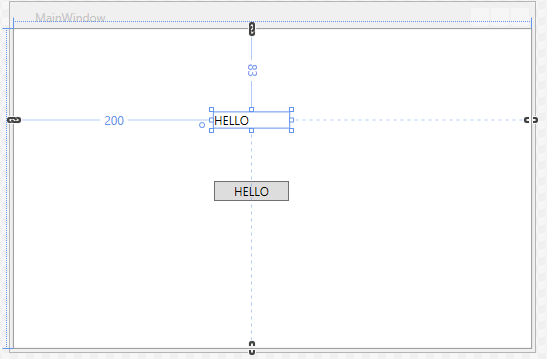
Before add code to MainWindow.fs add new class “Utilities” and move it to the top of the project …
module WPFOnlyFsharp.Utilities
open System
open System.Windows
/// Use this implementation of the dynamic binding operator
/// to bind to Xaml components in code-behind, see example below
let (?) (c:obj) (s:string) =
match c with
| :? ResourceDictionary as r -> r.[s] :?> 'T
| :? Control as c -> c.FindName(s) :?> 'T
| _ -> failwith "dynamic lookup failed"
This class includes function (?) for find object in the window …
Or you will be able to do it yourself by using *.FindName :?> Button (Cast to )
(Right click on the file and use [Move Up]/[Move Down] ) move it to the TOP
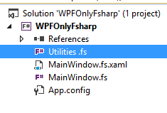
Now we can ready add code to main page …
<Window
xmlns="http://schemas.microsoft.com/winfx/2006/xaml/presentation"
xmlns:x="http://schemas.microsoft.com/winfx/2006/xaml"
Title="MainWindow" Height="350" Width="525">
<Grid>
<Button x:Name="btnHello" Content="HELLO" HorizontalAlignment="Left" Margin="200,152,0,0" VerticalAlignment="Top" Width="75"/>
<TextBlock x:Name="txtHello" HorizontalAlignment="Left" Margin="200,83,0,0" TextWrapping="Wrap" Text="***" VerticalAlignment="Top" RenderTransformOrigin="-0.16,0.812" Width="75"/>
</Grid>
</Window>
open System open System.Windows open System.Windows.Controls open WPFOnlyFsharp.Utilities // Very simple WPF ... //let a = Application() //let w = Window() // //[<STAThread>] //do a.Run(w) |> ignore let runWPFOnlyFsharp() = let resource = new Uri("/WPFOnlyFsharp;component/MainWindow.fs.xaml",System.UriKind.Relative) let runWindow = Application.LoadComponent(resource) :?> Window let txtHello : TextBlock = runWindow? let btnHello : Button = runWindow? do btnHello.Click.Add(fun _ -> do if txtHello.Text = "***" then txtHello.Text <- "Hello!" else txtHello.Text <- "***" ) runWindow [<STAThread>] (new Application()).Run(runWPFOnlyFsharp()) |> ignore That’s All … Thanks…
<Window xmlns="http://schemas.microsoft.com/winfx/2006/xaml/presentation" xmlns:x="http://schemas.microsoft.com/winfx/2006/xaml" Title="MainWindow" Height="350" Width="525"> <Grid> <Button x:Name="btnHello" Content="HELLO" HorizontalAlignment="Left" Margin="200,152,0,0" VerticalAlignment="Top" Width="75"/> <TextBlock x:Name="txtHello" HorizontalAlignment="Left" Margin="200,83,0,0" TextWrapping="Wrap" Text="***" VerticalAlignment="Top" RenderTransformOrigin="-0.16,0.812" Width="75"/> </Grid> </Window>